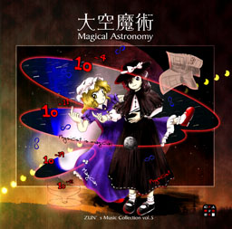
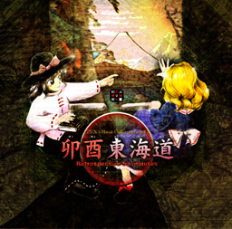
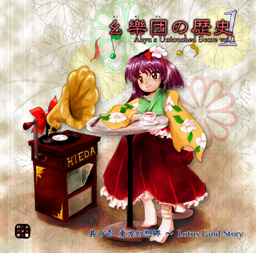
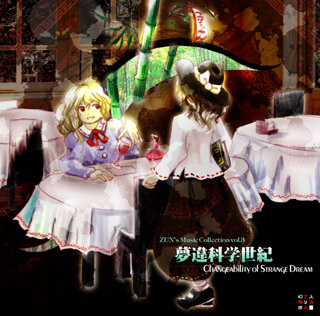
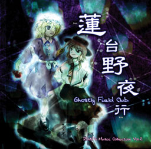
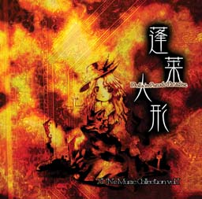

|
いらっしゃいませ。ここでは、当サークルで製作した音樂ＣＤを紹介しています。 主にコミケで発表しておりますので、興味がありましたら是非。 |
| 大空魔術 〜 Magical Astronomy | |||||||||||||||||||||||
|---|---|---|---|---|---|---|---|---|---|---|---|---|---|---|---|---|---|---|---|---|---|---|---|
 |
明るいニュースの号外が舞う それは、民間人を乗せた月面ツアーのニュースだった 永遠の浪漫、車椅子の宇宙 ――秘封倶楽部に新しい目標が生まれる 上海アリス幻樂団の、宇宙的で激しい音樂集第五弾！ 「大空魔術（おおぞらまじゅつ） 〜 Magical Astronomy」 物理学と民間月面ツアー、共通かつ最大の問題点とは―― 秘封倶楽部の非休日のんびり音楽CD。
頒布価格 イベント価格500円／店頭価格700円 ショートストーリー付き音樂集です。秘封倶楽部（今回は）蓮子中心の会話が聞けます。 C70で初発表予定！ |
||||||||||||||||||||||
| 卯酉東海道 〜 Retrospective 53 minutes | |||||||||||||||||||||||||
|---|---|---|---|---|---|---|---|---|---|---|---|---|---|---|---|---|---|---|---|---|---|---|---|---|---|
| ヒロシゲは二人を乗せて東へ走る 極めて日本的な東海道を東へ走る 最も美しい富士の山、不老不死の富士の山 ――秘封倶楽部にリアルとヴァーチャルが交錯する 上海アリス幻樂団の、幻想的で激しい音樂集第四弾！ 「卯酉東海道（ぼうゆうとうかいどう） 〜 Retrospective 53 minutes」 二人の休日は他愛の無い会話で過ぎていく。 秘封倶楽部の休日のんびり音楽CD。
頒布価格 イベント価格500円／店頭価格700円 ショートストーリー付き音樂集です。秘封倶楽部二人の普段の会話が盗み聴けます。 博麗神社例大祭2006で初発表予定！ |
 |
||||||||||||||||||||||||
| 幺樂団の歴史１ 〜 Akyu's Untouched Score vol.1 | |||||||||||||||||||||||||||||||||||||
|---|---|---|---|---|---|---|---|---|---|---|---|---|---|---|---|---|---|---|---|---|---|---|---|---|---|---|---|---|---|---|---|---|---|---|---|---|---|
 |
幺樂（ようがく）、それは今にも消え入りそうな音楽、幻樂の前身。ここではFM音源の事を指す。 その昔幻想郷には、この幺樂を好んで演奏した幺樂団（ようがくだん）という演奏団がいた。 ――幺樂団演奏の記録を、一人の少女が歴史に残す。 上海アリス幻樂団の幺樂シリーズ第一弾は、 「東方幻想郷（とうほうげんそうきょう） 〜 Lotus Land Story」 効果音に割り当てられて使用不能だった機能も解放し、本来の曲に戻ったFM幻想郷のサントラです。 なんと二枚組！
頒布価格 イベント価格未定（500〜700?) 博麗神社例大祭2006で初発表 |
||||||||||||||||||||||||||||||||||||
| 夢違科学世紀 〜 Changeability of Strange Dream | |||||||||||||||||||||||||
|---|---|---|---|---|---|---|---|---|---|---|---|---|---|---|---|---|---|---|---|---|---|---|---|---|---|
| 深い緑の森、冷たい鉄 白く輝く湖、淀んだ川 紅い洋館、灰色の塔 まあるい月、クレーターのある月 ――夢か現か、吉夢か、それとも悪夢なのか 上海アリス幻樂団の、幻想的で激しい音樂集第三弾！ 「夢違科学世紀（ゆめたがえかがくせいき） 〜 Changeability of Strange Dream」 二人の霊能少女は、未来の悪夢を吉夢に変える。 秘封倶楽部のサークル活動記録音楽CD。
頒布価格 イベント価格500円／店頭価格700円 12Pに及ぶショートストーリー付き音樂集です。 C67で初発表予定！ 12/17試聴曲（ショートバージョン低音質）を追加しました |
 |
||||||||||||||||||||||||
| 蓮台野夜行 〜 Ghostly Field Club | |||||||||||||||||||||||||
|---|---|---|---|---|---|---|---|---|---|---|---|---|---|---|---|---|---|---|---|---|---|---|---|---|---|
 |
秋の夜、二人の霊能少女は幻想の世界を視る―― 上海アリス幻樂団の、幻想的で激しい音樂集第二弾！ 「蓮台野夜行（れんだいのやこう） 〜 Ghostly Field Club」 幻想郷を知らない世代のオカルトサークル。
頒布価格 イベント価格500円／店頭価格700円 C65で発表 |
||||||||||||||||||||||||
| 蓬莱人形 〜 Dolls in Pseudo Paradise | |||||||||||||||||||||||||||||
|---|---|---|---|---|---|---|---|---|---|---|---|---|---|---|---|---|---|---|---|---|---|---|---|---|---|---|---|---|---|
 |
それは人間と妖怪の新しい関係だった 上海アリス幻樂団の暗く激しい音樂集第一弾！ 「蓬莱人形（ほうらいにんぎょう） 〜 Dolls in Pseudo Paradise」 ――幻想を失った世界の過去が蘇る
頒布価格 イベント価格500円／店頭価格700円 C63で発表 |
||||||||||||||||||||||||||||